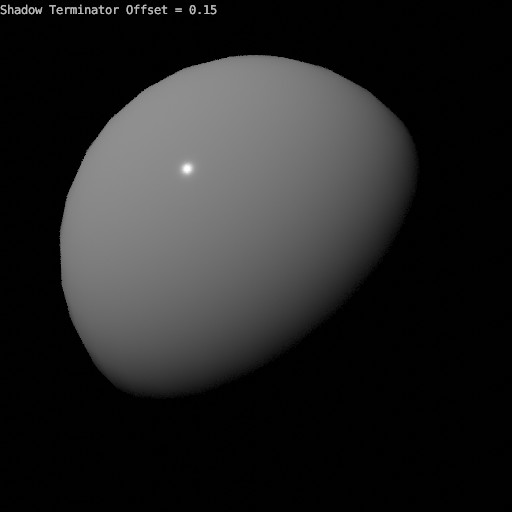

物体¶
可见性¶
参考
- 面板
See also
还有其他几个 一般可见性 属性。
- Mask
- 阴影捕捉
Enables the object to only receive shadow rays. It is to be noted that, shadow catcher objects will interact with other CG objects via indirect light interaction. This simplifies compositing CGI elements into real-world footage.

阴影捕捉示例。注意如何在球体中仍然可以看到平面的材质。¶
- Holdout
Render objects as a holdout or matte, creating a hole in the image with zero Alpha, to fill out in compositing with real footage or another render.
射线可见性¶
Objects can be set to be invisible to particular ray types. This can be used, for example, to make an emitting mesh invisible to camera rays. For instanced objects, visibility is inherited; if the parent object is hidden for some ray types, the children will be hidden for these too.
In terms of performance, using these options is more efficient that using a shader node setup that achieves the same effect. Objects invisible to a certain ray will be skipped in ray traversal already, leading to fewer ray casts and shader executions.
- 相机
使物体在相机光线中可见。
- 漫射
使物体在漫射光线中可见。
- 光泽
使物体在光泽光线中可见。
- 透射
使物体在透射光线中可见。
- 体积散射
使物体在透射光线中可见。
- 阴影
使物体能够投射阴影。
运动模糊¶
参考
- 面板
Each object has its own motion blur settings along with the Scene Level Motion Blur These settings can be found in the Object Properties tab of the Properties.
- 步数
Controls accuracy of deformation motion blur, more steps uses more memory. The actual number of time steps is \(2^{steps -1}\).
- 塑性
为变形网格(例如动画角色，包括头发)启用运动模糊。
Warning
An object modifier setup that changes mesh topology over time can not render deformation motion blur correctly. Deformation blur should be disabled for such objects. Common examples of this are animated Booleans, Deformation before Edge Split, Remesh, Skin or Decimate modifiers.
Shading¶
参考
- 面板
- Shadow Terminator Offset
Pushes the shadow terminator (the line that divides the light and dark) towards the light to hide artifacts on low-poly geometry such as the ones below:

Shadow Terminator Artifacts.¶
Result of using an offset of 0.15.¶
Note
This property artificially alters the scene's lighting and is not energy conserving and consequently not physically accurate.